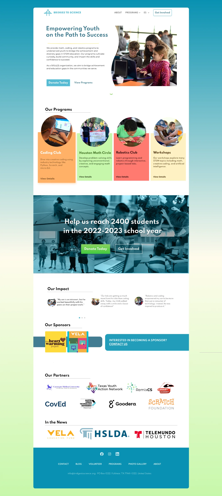
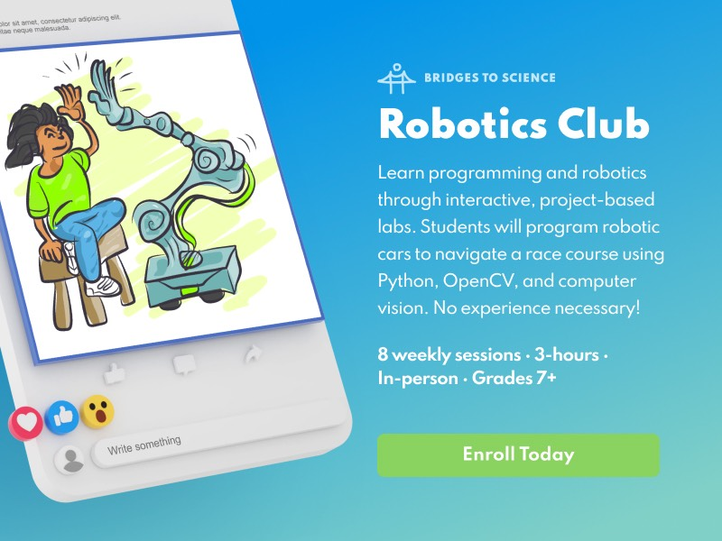
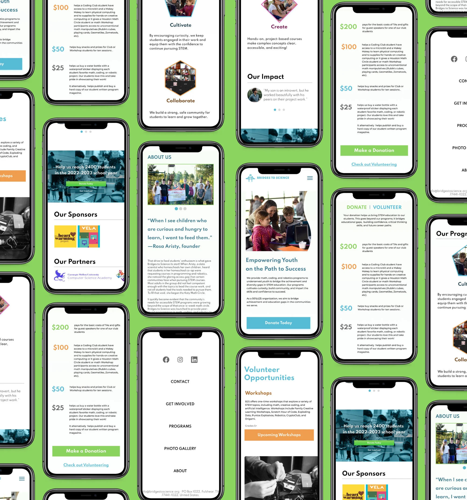

Bridges to Science
Bridges to Science is a nonprofit that encourages kids to explore science and technology. I worked with their founder to design a website that shows off their work, attracts donors, and excites volunteers. My deliverables included a branding guide, prototypes, hand-drawn illustrations, and engaging copy.





Results
More
student sign-ups
Better
professional presence
Easier
content updates
Ready to level up your product experience?
I'm open to collab with cool, creative people.
Let's work together